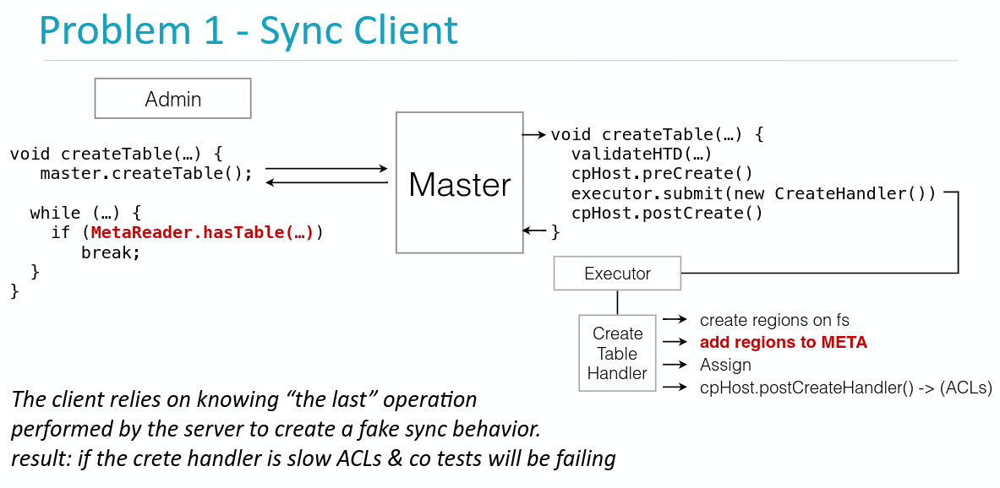

HBase Procedure v2介绍
HBase Procedure v2提供了一种对内的事务能力，注意这里是对内的事务。简单来说，这里不是HBase数据层面的事务，而是操作步骤层面的事务。在Procedure v2出来之前，HBase的操作过程处于一种伪事务的状态，同步操作的流程也处于一种伪同步的流程。在分布式的环境下，如果一个操作环节出现了问题，那么处理起来也非常棘手。

比如在Master中的CreateHandler()任务交给了线程池，并没有实现真正意义上的同步。而且如果CreateHander()的创建过程如果非常长，或者出现了失败，也没有足够的回滚机制来将Master中存储的信息会滚到之前的状态。这些在HBase的稳定性上面都存在极大的隐患，基于此，HBase社区与2.0.0引入Procedure V2来解决这一系列问题。 比如上图的问题，采用Procedure V2就可以实现为如下，将这个“伪异步”的线程作为一个procedure，当执行后，返回一个procId，然后客户端就可以根据这个procId确认该步骤是否完成。

HBase Procedure v2架构
整个Procedure v2模块分为图中所示的三大块，每块各司其主共同完成事务操作。 ProcedureExecutor首先会将Procedure提交给ProcedureStore完成持久化，接着由ProcedureScheduler从ProcedureStore获取合适的Procedure进行调度，最后将该合适的Procedure传递给ProcedureExecutor中的WorkerThread完成执行
涉及的核心方法
Procedure 相关的类均被定义在 hbase-procedure 包里面，目前也仅仅只有HMaster会用到。Procedure 的几个组成模块中，每个模块定义了几个非常重要的方法。
| 名称 | 说明 |
|---|---|
| Procedure | execute(), rollback() |
| ProcedureExecutor | sumitProcedure(Procedure), isFinished(procId), getResult(procId) |
| ProcedureStore | load(Proc), insert(Proc), update(Proc), delete(Proc) |
其中Procedure的execute()方法和rollback()方法，实现要求必须具有幂等性，即无论执行多少次，其结果应该是一样的。也正是因为这两个方法的存在，使得Procedure可以保证事务性。
Procedure
Procedure定义了具体的执行步骤，有点类似与执行模板/蓝图之类的概念，它并不能直接执行，只是定义好了每个步骤的状态，执行过程，最后由ProcedureExecutor对这些过程和状态描摹执行。
ProcedureExecutor
负责提交、执行Procedure。Procedure的执行操作，主要由其负责的多个WorkerThread来完成。
ProcedureStore
用来持久化新提交的Procedure以及后续的每一次状态更新值。 ProcedureStore的默认实现类为WALProcedureStore，基于日志文件来持久化Procedure信息，虽然称之为WAL，但与HBase自身的WAL日志文件的实现完全不同，类似点在于：
当超过一定大小后或者超过一定的时间周期后，需要roll一个新的WAL文件出来，避免一个WAL文件过大。 因此需要实现一套关于无用WAL日志文件的跟踪清理机制，避免WAL文件占用过大的存储空间和一套类似于RingBuffer的机制，通过打包sync并发的写入请求，来提升写入吞吐量。
ProcedureScheduler
负责调度一个集群内的各种类型的Procedure请求，支持按优先级调度，相同优先级的Procedure则支持公平调度。 从源码分析来看，ProcedureScheduler一共有两种，一种是 MasterProcedureScheduler，另一种是 SimpleProcedureScheduler 。MasterProcedureScheduler 主要负责Master相关的Procedure的调度，而 SimpleProcedureScheduler 主要负责WAL相关的Procedure调度。但是 WALProcedureStore 是 SimpleProcedureScheduler 的唯一调用方法，而该方法已经被废弃，因此可以认为 SimpleProcedureScheduler 几乎无用了。